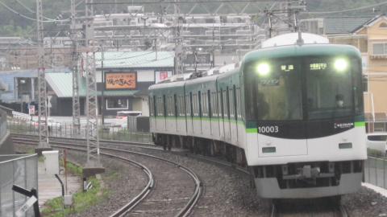

About
サイトについて
このサイトは、鉄道系のコンテンツ等々を載せていくサイトです。よろしくお願いします。
中の人について
このサイト内のコンテンツは、DA3Gが管理しており、ページ制作、公開も全てやっています。簡単な自己紹介
- 名前：DA3G
- 年齢：13(2021年5月現在)
- 住んでるところ：近畿地方
- 分類：音鉄・乗り鉄
- 鉄道以外の趣味：ガジェット、アニメ、音楽、とか。
- 機材：
- 写真：SONY SOL21、AQUOS A003SH、Canon IXY Digital 110 IS
- 録音：Olympus V-75(レコーダー)+オーディオテクニカ AT9944(マイク)、Olympus ME52W(マイク)+Olympus V-872(レコーダー)
- 使用ソフト：visual studio 2022、Aviutl、REAPER、Finale notepad、スコアメーカーZERO、LED方向幕/電光掲示板maker、電光掲示板メーカー2、Paint.NET、Libre office、WMM、Next Station、誰でもトレインビジョン、LED matrix of train
- 一言：こういうサイトを作っておきながら驚くほど知識がありませんが、頑張ってやってます。よろしくお願いします。
- Twitter・youtube・niconico・soundcloud